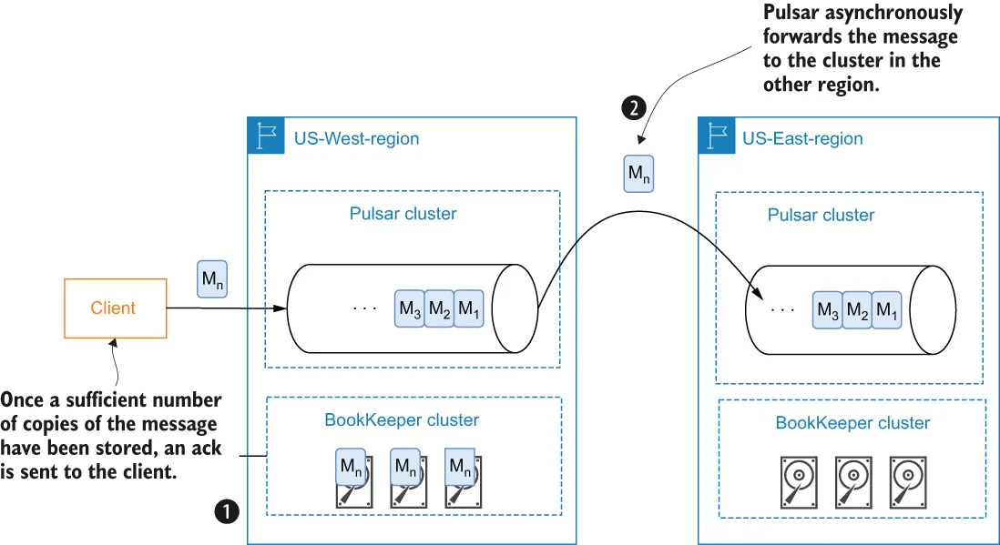
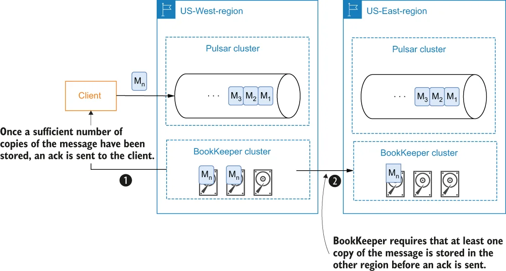

Apache Pulsar is a messaging system that supports both synchronous geo-replication within a single Pulsar cluster and asynchronous geo-replication across multiple clusters. It has been deployed globally in more than 10 data centers at Yahoo! since 2015 with full 10 x 10 mesh replication for mission critical services, such as Yahoo! Mail and Finance.
Apache Pulsar 是一个同时支持单个 Pulsar 集群内同步跨地域复制、以及跨多个集群的异步跨地域复制的消息系统。自 2015 年起，它已在 Yahoo! 全球超过 10 个数据中心部署，为 Yahoo! Mail 和 Yahoo! Finance 等关键任务服务提供完整的 10 x 10 网状复制。
Geo-replication is a common practice used to provide disaster recovery capabilities for enterprise systems by distributing a copy of the data to different geographical locations. This ensures that your data, and the systems that rely upon it, will be able to withstand any unforeseen disasters, such as natural disasters. The geo-replication mechanisms used in different data systems can be classified as either synchronous or asynchronous. Apache Pulsar allows you to easily enable asynchronous geo-replication using just a few configuration settings.
跨地域复制是一种常见做法，通过把数据的一份副本分发到不同的地理位置，来为企业系统提供灾难恢复能力。这确保了你的数据以及依赖这些数据的系统，能够承受任何不可预见的灾难，例如自然灾害。不同数据系统所采用的跨地域复制机制可以分为同步或异步两类。Apache Pulsar 让你只需少量配置项就能轻松启用异步跨地域复制。
With asynchronous geo-replication, the producer doesn’t wait for an acknowledgment from the other data centers that they have received the message. Instead, the producing client receives an acknowledgment immediately after the message has been successfully persisted within the local BookKeeper cluster. The data is then replicated from the source cluster to the other data centers in an asynchronous fashion, as shown in figure 1.22.
采用异步跨地域复制时，生产者不会等待其他数据中心确认已收到消息。相反，一旦消息在本地 BookKeeper 集群中成功持久化，生产端客户端就会立即收到确认。随后，数据以异步方式从源集群复制到其他数据中心，如图 1.22 所示。

\Figure 1.22 When using asynchronous geo-replication in Apache Pulsar, the message is stored locally within the BookKeeper cluster running in the same region that receives the message. The message is asynchronously forwarded in the background to the Pulsar cluster in the other region.
图 1.22 在 Apache Pulsar 中使用异步跨地域复制时，消息被存储在接收该消息的同一区域内的 BookKeeper 集群中。随后该消息会在后台被异步转发到另一区域的 Pulsar 集群。
Asynchronous geo-replication provides lower latency because the client doesn’t have to wait for responses from the other data centers. However, it also results in weaker consistency guarantees due to asynchronous replication. Since there is always a replication lag in asynchronous replication, there is always some amount of data that hasn’t been replicated from source to destination.
异步跨地域复制提供了更低的延迟，因为客户端不必等待来自其他数据中心的响应。然而，由于复制是异步的，它也导致了一致性保证变弱。由于异步复制中始终存在复制滞后，因此总会有一部分数据尚未从源端复制到目标端。
Synchronous geo-replication is a bit more complicated to achieve with Apache Pulsar than asynchronous, as it requires some manual configuration to properly ensure that a message will only be acknowledged when a majority of the data centers have issued a confirmation that the message data has been persisted to disk. While I will save the details of exactly how synchronous geo-replication can be achieved with Apache Pulsar for appendix B, I can tell you that it is made possible due to Pulsar’s two-tiered architecture design and the ability for an Apache BookKeeper cluster to be composed of both local and remote nodes, particularly ones in different geographical regions, as shown in figure 1.23.
在 Apache Pulsar 中实现同步跨地域复制要比异步稍复杂一些，因为它需要一些手动配置，以确保只有在大多数数据中心都已发出"消息数据已持久化到磁盘"的确认之后，该消息才会被确认。虽然我会把如何利用 Apache Pulsar 实现同步跨地域复制的具体细节留到附录 B，但我可以告诉你：之所以能够实现，得益于 Pulsar 的两层架构设计，以及 Apache BookKeeper 集群可以由本地节点和远程节点共同组成的能力——特别是那些位于不同地理区域的节点，如图 1.23 所示。

\Figure 1.23 You can exploit BookKeeper’s ability to use remote nodes in order to achieve synchronous geo-replication to ensure that a copy of the message is stored in the remote region.
图 1.23 你可以利用 BookKeeper 使用远程节点的能力来实现同步跨地域复制，以确保消息的一份副本被存放在远程区域。
Synchronous geo-replication provides the highest availability, where all of your physically available data centers form a global logical instance for your data system. Your applications can run everywhere at any data center and still be able to access the data. It also guarantees stronger data consistency between different data centers, which your applications can easily rely on without any manual operations involved when data center failures occur.
同步跨地域复制提供了最高的可用性：你所有在物理上可用的数据中心，会共同构成数据系统的一个全局逻辑实例。你的应用可以在任何地方、任何数据中心运行，并且仍然能够访问数据。它还保证了不同数据中心之间更强的数据一致性，当数据中心发生故障时，你的应用可以轻松依赖这一点，而无需任何人工操作介入。
Unlike other messaging systems that rely on external services, Pulsar offers geo-replication as a built-in feature. Users can easily enable replication of message data between Pulsar clusters in different geographical regions. Once replication is configured, data is continuously replicated to the remote clusters without any interaction on the part of the producers or consumers. I cover to how configure geo-replication in greater detail in appendix B.
与那些依赖外部服务的其他消息系统不同，Pulsar 把跨地域复制作为内置特性提供。用户可以轻松启用位于不同地理区域的 Pulsar 集群之间的消息数据复制。一旦配置了复制，数据就会持续复制到远程集群，而生产者和消费者无需任何参与。我会在附录 B 中更详细地介绍如何配置跨地域复制。